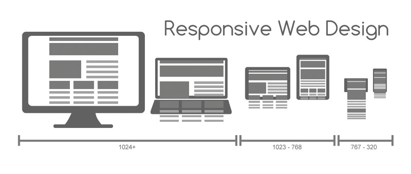

Lenguaje HTML VOLVER
El Lenguaje de Marcado de Hipertexto (HTML) es el código que se utiliza para estructurar y desplegar una página web y sus contenidos. Por ejemplo, sus contenidos podrían ser párrafos, una lista con viñetas, o imágenes y tablas de datos. Como lo sugiere el título, este artículo te dará una comprensión básica de HTML y cúal es su función.
HTML no es un lenguaje de programación; es un lenguaje de marcado que define la estructura de tu contenido. HTML consiste en una serie de elementos que usarás para encerrar diferentes partes del contenido para que se vean o comporten de una determinada manera. Las etiquetas de encierre pueden hacer de una palabra o una imagen un hipervínculo a otro sitio, se pueden cambiar palabras a cursiva, agrandar o achicar la letra, etc.
-
La etiqueta de apertura: consiste en el nombre del elemento (en este caso, p), encerrado por paréntesis angulares (<>) de apertura y cierre. Establece dónde comienza o empieza a tener efecto el elemento en este caso, dónde es el comienzo del párrafo.
-
La etiqueta de cierre: es igual que la etiqueta de apertura, excepto que incluye una barra de cierre (/) antes del nombre de la etiqueta. Establece dónde termina el elemento en este caso dónde termina el párrafo.
-
El contenido: este es el contenido del elemento, que en este caso es sólo texto.
-
El elemento: la etiqueta de apertura, más la etiqueta de cierre, más el contenido equivale al elemento.

CSS es un lenguaje de hojas de estilos creado para controlar el aspecto o presentación de los documentos electrónicos definidos con HTML y XHTML. CSS es la mejor forma de separar los contenidos y su presentación y es imprescindible para crear páginas web complejas.
Separar la definición de los contenidos y la definición de su aspecto presenta numerosas ventajas, ya que obliga a crear documentos HTML/XHTML bien definidos y con significado completo (también llamados "documentos semánticos"). Además, mejora la accesibilidad del documento, reduce la complejidad de su mantenimiento y permite visualizar el mismo documento en infinidad de dispositivos diferentes.
Al crear una página web, se utiliza en primer lugar el lenguaje HTML/XHTML para marcar los contenidos, es decir, para designar la función de cada elemento dentro de la página: párrafo, titular, texto destacado, tabla, lista de elementos, etc.
Una vez creados los contenidos, se utiliza el lenguaje CSS para definir el aspecto de cada elemento: color, tamaño y tipo de letra del texto, separación horizontal y vertical entre elementos, posición de cada elemento dentro de la página, etc.
| TABLA DE CONTENNIDOS |
| Selectores |
Modelo de Cajas |
Posicionamiento |
- Selectores básicos
- Selectores avanzados
- Agrupación de reglas
- Herencia
- Colisiones de estilos
|
- Anchura y altura
- Margen y relleno
- Bordes
- Modelo de cajas
- Fondos
|
- Posicionamiento normal
- Posicionamiento relativo
- Posicionamiento absoluto
- Posicionamiento fijo
- Posicionamiento flotante
|
Programación PHP VOLVER
Si eres diseñador seguramente en algunos de tus proyectos web te has enfrentado a la necesidad de usar páginas o sitios dinámicos, especialmente en php. Para hacer este tipo de proyectos generalmente ocuparíamos de programadores sin embargo en las últimas fechas han salido aplicaciones que nos permiten hacer uso de estas páginas dinámicas sin que sepamos programación, una de ellas es dreamwaver, sin embargo para proyectos más grandes dreamwaver se queda corto sobre todo pensando que se ocupan muchos pasos para hacer simples tareas de manejo de datos y en algunas de ellas incluso se requiere programación forzosa.
Mi nombre es Jaime Pari Tapara en este curso aprenderemos a crear sitios web dinámicos basados en php sin programación desde una simple página de contacto hasta un completo sistema de gestión basado en web, todo ellos en minutos y completamente personalizable dejándonos la parte de diseños a nosotros y la maravillosa herramienta que usaremos en este curso hara todo lo demás de forma automática.
Contenidos:
- Fundamentos PHP
- Variales y constantes
- Funciones Básicas y Avanzadas
- Condicionales y Bucles
- Arreglos y Sesiones